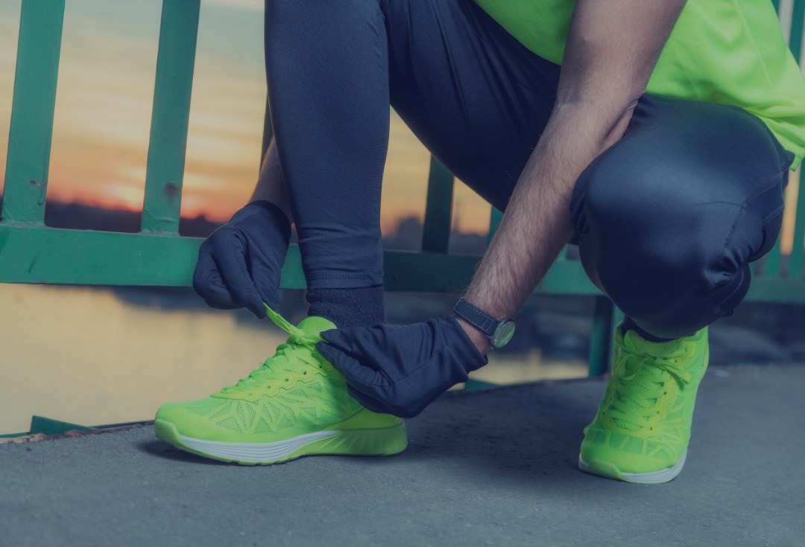
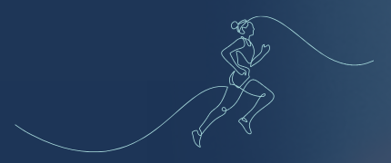

Stay Active
Make time for movement after work and turn the end of your day into the best part of it.
The workday is done, so now the fun starts. Miles After Five is where you run, connect and unwind with people who are just as ready for a better evening as you are.
Calculate Your Pace
Miles After Five is a community for young professionals who want to stay active, meet new people and have something to look forward to once the 9-to-5 wraps up.
It is not about speed or distance. It is about showing up, making time for yourself and finding your people along the way. Whether you run, jog or walk-run, there is a place for you here.
Make time for movement after work and turn the end of your day into the best part of it.
Connect with like-minded individuals who are looking for friendship as much as fitness.
Focus on consistency and enjoyment rather than competition. Every mile counts.
Pop in your distance and time to see your average pace per mile.

Calculate Your Pace